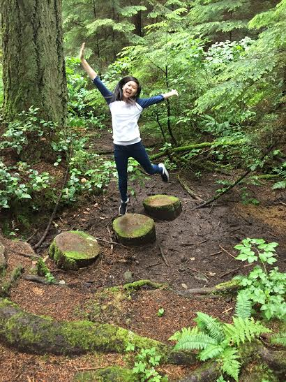

Cindy Huynh
Just me being me! Full of randomness, weirdness, and fun!
About Me!

Hello! People say I am "lowkey highkey funny". I do not believe so, because I think I am highkey funny all the time. I don't care what other people say because I am always right. Oh right, back to the introduction. My name is Cindy Huynh. I am currently an incoming senior at Encinal High School in Alameda, California. My hobbies consists of a wide vareity of activities. One of my specialties that I excel at is messing with people. It is just SOOO fun getting reaction out of them. One of my favorite people to mess with is Paola Alban. She is just so easy to mess with and her reactions are very dramatic. Sorry, I just went off topic again. So my favorite hobbies are binge watching television shows, hanging out with friends, playing video games, or just something really simple like taking naps or listening to music. I'd like to think that I can code in Python, C++, HTML, and CSS but I am still far from perfection. I am still constantly learning new coding languages and practicing the languages I sorta know already! My physical age is 17 but I get a lot of people telling me I act like I am 12, and that is totally okay! I like to believe that I am very mature for my age, but when I tell people that, they look at me with a funny face and shake their heads subtlety. Although I have an immature side to me, when needed to be serious, I am very focused and can get things done in a very efficient and deliberate matter. If there are any questions, I will be very happy to answer them! I would like to think I am a pretty easy person to talk to, but I'm not sure because I don't really talk to myself so give it a try! That's it!